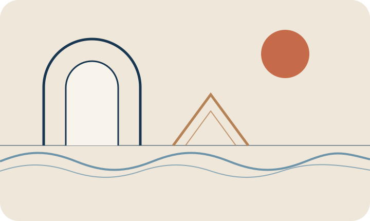

Continual
adaptation
Understanding and mitigating loss of plasticity as neural systems accumulate experience under changing data and task distributions.
PhD Researcher · Computer Science · University of Vermont
Learning systems for worlds that do not stand still.
I study continual learning, reinforcement learning, and adaptive representations, with a particular interest in how learning systems can preserve their ability to change as they accumulate experience.

Research
My research asks how artificial agents can remain adaptable over long horizons — not only retaining what they have learned, but preserving the capacity to learn what comes next.
Understanding and mitigating loss of plasticity as neural systems accumulate experience under changing data and task distributions.
Studying reinforcement-learning agents in environments whose dynamics, tasks, and useful behaviors can shift over time.
Exploring whether policy repertoires, structural variation, and learned behavior spaces can improve future adaptation and recovery.
A question I keep returning to
How can we optimize not only what a system knows now, but what it will remain capable of learning later?
Selected work
Recent work spans continual learning, structural plasticity, and continual reinforcement learning.
Elsewhere
I am interested in first-principles questions about learning and adaptation, but I also care about empirical mechanisms: what breaks, why it breaks, and what interventions actually change the behavior of a learning system.